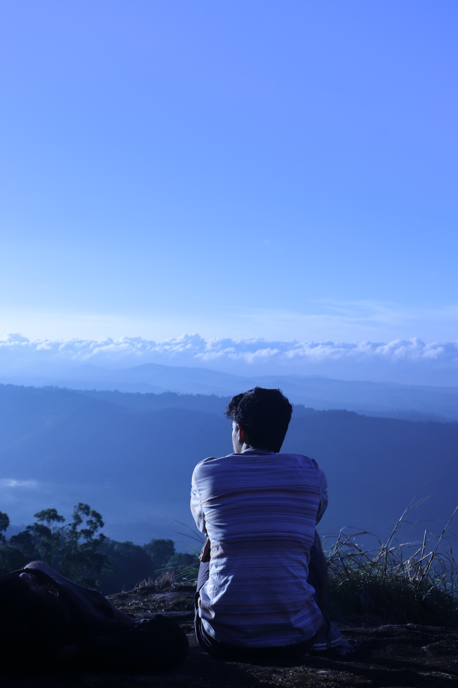
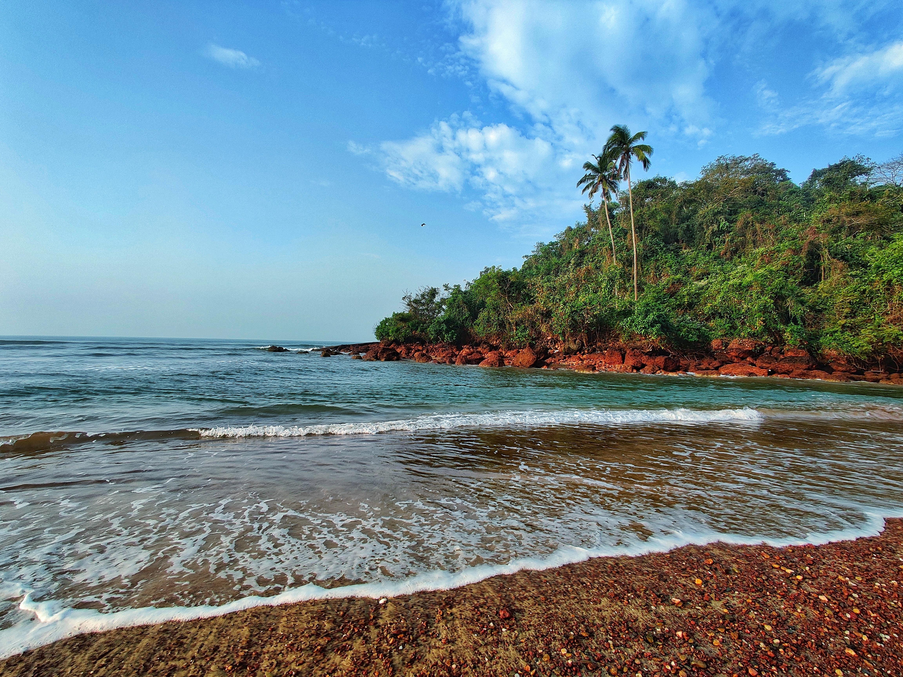
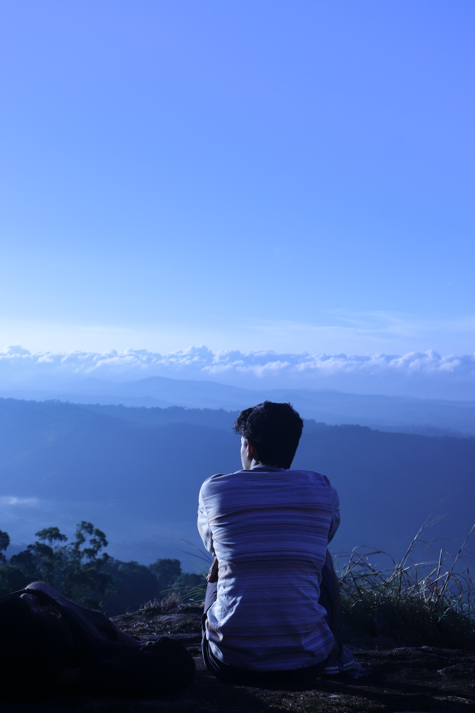
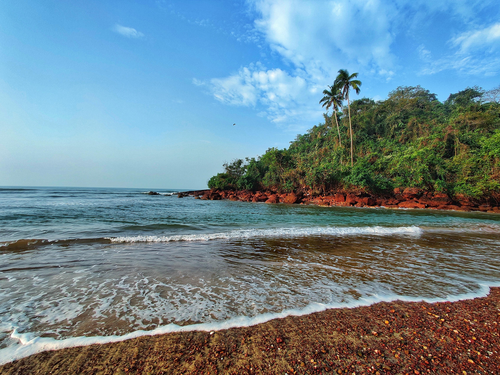

Unseen Beauties of India
India is a country blessed with abundant natural beauty, and it's challenging to pinpoint a single location as the most unseen natural beauty.

India is a country blessed with abundant natural beauty, and it's challenging to pinpoint a single location as the most unseen natural beauty.

 



This route is advised to be taken by the people who are young, healthy and looking for some adventure
With a network of 44 rivers and turquoise blue backwaters, Kerala basks in the lap of nature
This pristine and serene state lies in the South - Eastern part of India
Gokarna Main Beach is mainly used by Indian pilgrims. Main Beach is a long open beach, known for surfing.
Embark on a journey that transcends boundaries, as each step becomes a story and every destination an adventure. Travel not just to explore places, but to discover the depths of your own soul. In the tapestry of life, let each travel experience weave a vibrant thread of memories, connecting you to the extraordinary tapestry of the world.
-krishna, explorer.Sign Up Now and Unlock the Gateway to Endless Discoveries!